SiLA2 Add-on
Installation
SiLA 2 add-on is not included in the standard CETONI Elements installation package, but must be installed additionally as an add-on. The versions of SiLA 2 Plugin and installed CETONI Elements software should match. For example, if you want to install SiLA 2 Plugin with version number 20210707, CETONI Elements software should be installed with version number 20210707.
Important. The version number of the CETONI Elements software and the SiLA 2 add-on should match. The version of the SiLA 2 add-on must never be greater than the version of the CETONI Elements software. The greater the difference between the version numbers, the greater the risk of problems or errors occurring. |
{kind=link}
Please close all other programs before installation.
Start the file CETONI_Elements_SiLA_64bit_Setup.exe for installation. The installation wizard will then guide you through the installation of the software and hardware drivers.
{kind=link}
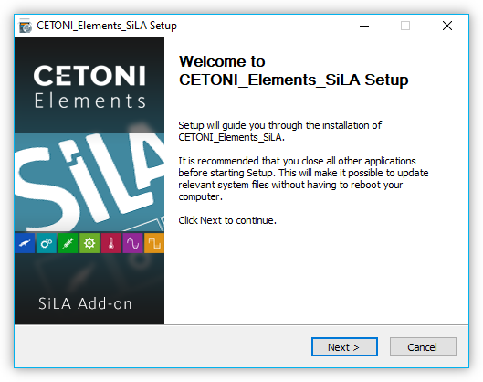
During the installation, the Bonjour Print Services are installed which are necessary for the automatic discovery of SiLA Servers in the network. This step is only required if the Bonjour Services are not already installed on your computer. If they are already installed, please deactivate the corresponding component (figure below).
{kind=link}
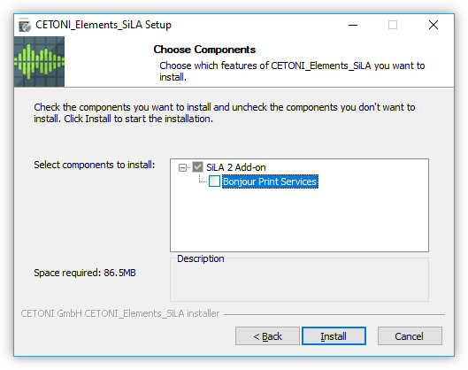
Important. On Windows, you must be logged in with administrator privileges to install the hardware drivers. |
SiLA 2 Basics
SiLA 2 (Standardization in Lab Automation) is a communication standard for laboratory devices. The primary goal of SiLA is to create an international, open connectivity standard in laboratory automation that allows devices from different manufacturers to communicate with each other in one application.
Client-Server concep
Communication is client-server based and uses established network standards. A SiLA server is usually provided by a device while a SiLA client is usually a control software (e.g. a LIMS or CETONI Elements). Since a SiLA server represents a device in most cases, the terms SiLA server (or just server) and device are used synonymously in this document.
The client always acts as the master by initiating the connection to a server. The connection is established via a TCP/IP network. A central component of SiLA 2 is the discovery of SiLA servers by SiLA clients in a local network. A client can use the SiLA Server Discovery mechanism to determine all available servers and their functionalities.
In SiLA 2, these functionalities of a device are called features. Features are another central component of SiLA 2. They describe which data a server provides and which actions the device can perform.
Commands and Properties
In SiLA 2, the data are called propertiesand the actions are called commands. Properties and commands can be both unobservable and observable.
Unobservable properties are static data of a server that do not change during the runtime of a server (e.g. the number of possible switching positions of a valve).
Observable properties are dynamic data of a server that can change during the runtime of a server and about which clients should be informed (e.g. the current flow rate of a syringe pump). Clients can subscribe to observable properties so that they are notified of any changes to the property.
Unobservable commands are actions that can be performed on a device and that take very little time (e.g., to change settings such as the syringe parameters of a pump).
Observable commands are actions that can potentially take a long time to execute on the device (e.g., fluid dispensing). Here, a client can subscribe to the so-called Execution Info to be notified about the progress of the command execution.
Commands (unlike properties) can have parameters and return values. Parameters can be used to influence the execution of a command (e.g. to specify the desired flow rate and the volume to be dosed for a dose). Return values can be used to transmit the result of a command execution to the client (e.g. the acquisition data of a spectrometry).
Additional metadata may be required to read a property or execute a command. These behave similarly to command parameters in the sense that depending on the metadata the value of a property or the effect of a command execution can vary.
Tip. A comprehensive introduction to the SiLA standard is available on the SiLA homepage: https://sila-standard.com/standards/ |
{kind=link}
Introduction to the SiLA Add-on
By clicking the SiLA 2 button and selecting Server Overview ❶ in the sidebar, you switch to the SiLA 2 add-on (see figure below).

SiLA 2 button for display of Server Overview and connected SiLA 2 servers.
Tabs for selecting the Server Overview or a SiLA 2 server
Button to perform a network scan to find available SiLA 2 servers
Button to connect to all servers in the list
Display of all SiLA 2 servers found in the network or added manually
Button to connect or disconnect from a SiLA 2 server
Button to delete the server from the list
Button for adding a SiLA 2 server manually
Selection box for allowing unencrypted connections.
You can use the sidebar button ❶ or the tabs ❷ to switch between the currently connected SiLA 2 servers and the Server Overview. A tab is created for each server.
Connecting to a SiLA 2 server
Connecting to automatically detected servers
To connect to a SiLA 2 server that was found in the local network via SiLA Server Discovery, simply click on the Connect icon ❶ in the corresponding row in the Server Overview. After the connection has been successfully established, the Disconnect icon ❷ appears instead of the Connect icon. By clicking on this icon you can disconnect from this device again.
{kind=link}
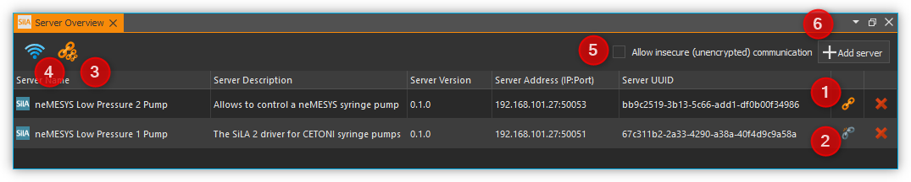
Tip. The Connect-To-All ❸ button allows you to connect to all devices at once, rather than having to connect to each device individually. |
Tip. If the software did not find one or more of your SiLA devices, it may help to restart the servers and run a new network scan ❹. |
Tip. If you close the software while still connected to one or more SiLA servers, it will attempt to restore those connections the next time you start the software. |
Important. If you delete a server with an active connection to the software from the Server Overview list, then the connection is automatically disconnected. |
Normally, communication between SiLA server and client is encrypted. However, if one of your devices does not provide encryption, the connection attempt will fail with an error message in the event log. For local testing, you can still connect to this device if you check Allow insecure (unencrypted) connection ❺.
Attention. You should never establish an unencrypted connection to a device that is outside your local network, otherwise all communication between the device and the software can be read by third parties. |
{kind=link}
Manually add and connect to a server
If a server in your local network is not found automatically, or if you want to connect to a server outside your local network, you must add this server manually. To do this, click the Add server ❻ button (see figure above). The following dialog box appears.
 Enter either the host name or the IP address of your device
and the port on which the SiLA server is running. Then click OK.
Enter either the host name or the IP address of your device
and the port on which the SiLA server is running. Then click OK.
The software will now try to connect to this server. If this is successful, the server will appear in the Server Overview list. If the connection cannot be established, you will find an error message in the Event Logwith information about why the connection failed.
Accept untrusted certificates
SSL certificates are used to encrypt the communication between server and client, which are also used to encrypt the communication on the Internet. Usually, these certificates are signed by a trusted certificate authority. If you try to connect to a server that uses a self-signed certificate, the following dialog box appears:
 Here you can decide whether or not to connect despite the
untrusted certificate. By clicking View Certificate you get more
information about the certificate. There you can see, most importantly,
which institution created and signed the certificate.
Here you can decide whether or not to connect despite the
untrusted certificate. By clicking View Certificate you get more
information about the certificate. There you can see, most importantly,
which institution created and signed the certificate.
If you trust the certificate, click Yes in the dialog box to continue the connection, otherwise click No. In this case, the connection will be aborted.
Control of a SiLA 2 server
After you have successfully connected to a SiLA server, you can control it via a generic interface. This interface looks the same for any type of SiLA server, that is, for any device regardless of the type or manufacturer of the device. While this interface allows you to control every aspect of a SiLA server, it cannot be used to create complex workflows. For this purpose, the script functions provided by the plugin, which are presented in Section 1.6, are more suitable.
Open the generic interface by selecting the desired server with the SiLA 2 button in the sidebar (see section Introduction to the SiLA Add-on). You will first see all SiLA 2 features provided by the server ❶. If you move the mouse pointer over one of thei icons, a tooltip with the description of the feature ❷ will appear. By clicking on the feature name or the arrow to the left of the name, you can expand the feature. Now you can see all available commands and properties of this feature ❸. Commands can be found on the left side, properties on the right side. With the splitter you can resize the width that is available to the commands or properties ❹.
{kind=link}
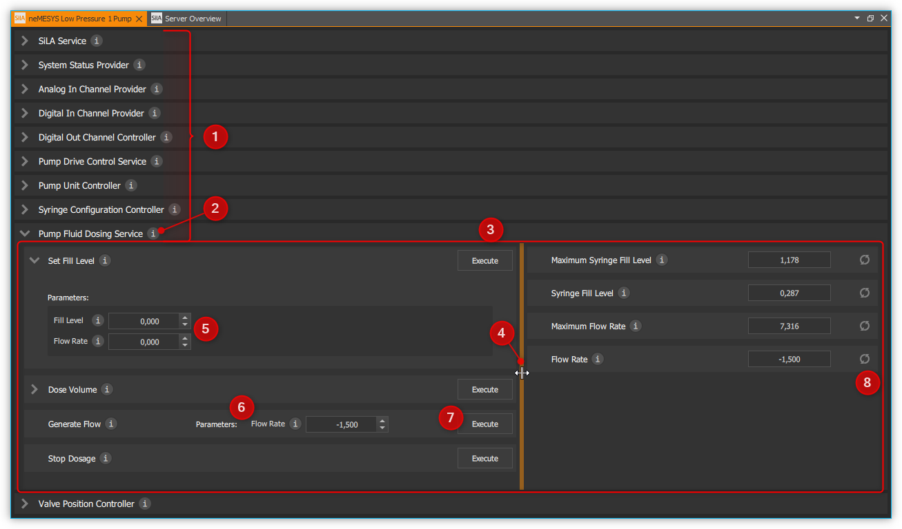
If a command has parameters, metadata or return values, it can also be expanded to enter the parameters or metadata and display the return values ❺. If a command has no parameters or only one, then the command cannot be expanded and at most one input field is displayed directly next to the command name ❻. To execute the command, click the Execute button ❼.
Normally, properties cannot be expanded. Here, only a field with the current value of the property is displayed. To the right is a button for re-polling the property ❽. Clicking the button triggers one of the following two actions:
If the property is Unobservable(see Section 1.2.2), then it is simply queried again by the server.
If the property is Observable, the subscription running in the background is canceled and a new subscription is started. This may be necessary, for example, if the subscription was automatically canceled due to an error.
It is possible that a property requires metadata. In this case, the property can be expanded like a command and the input fields for the metadata ❾ appear. After you have entered the metadata, you must query the property again or start a new subscription so that this data is sent to the server.
{kind=link}
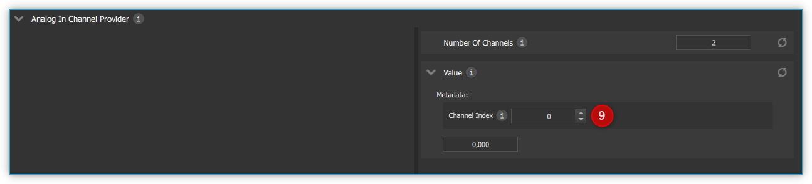
Important. When the generic interface is opened for the first time, all unobservable properties are queried once and subscriptions are automatically started in the background for observable properties. However, this only works if the property does not require metadata. In this case you have to enter the metadata first and then query the value yourself or start a subscription yourself. |
If you terminate the connection to a server or the connection is automatically terminated, e.g. due to a network error, the interface remains open, but all input fields and buttons are locked. If you then want to close the tab for the affected server, the following dialog box appears:
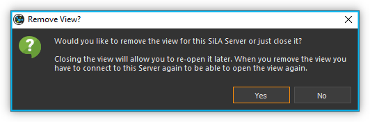
{kind=link}
SiLA 2 Script Functions
Introduction
The SiLA 2 plugin contains various script functions for script-driven execution of commands and querying of properties.
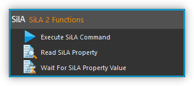
Execute SiLA Command
{kind=link}
 With this function you can execute a SiLA command and store
the result of the execution in a variable.
With this function you can execute a SiLA command and store
the result of the execution in a variable.
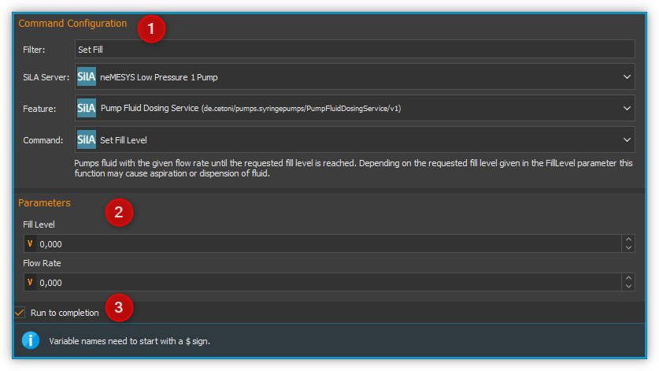 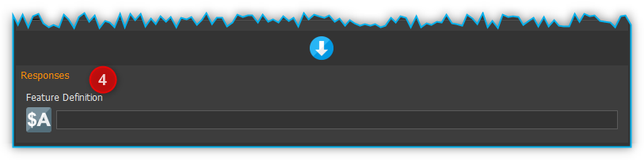
{kind=link}
{kind=link}
In addition, you can enable or disable the Run to completion ❸ option for Observable Commands. If Run to completion is enabled, script execution will not continue until the command has been fully executed. If this option is not active, the command is only started and then the next script function is processed immediately.
If the command has return values, you can also specify variables ❹ in which these values are to be stored.
Tip. All SiLA script functions support the use of variables. This means that you can enter variables in all input fields marked with a colored V in the configuration area. |
Read SiLA Property
With this function you can query a property and store the value into a variable.
{kind=link}
 You can set the property ❶ to be queried and the possible
required metadata ❷ in the configuration area.
You can set the property ❶ to be queried and the possible
required metadata ❷ in the configuration area.
Enter the name of the variable that is supposed to store the value of the read property in the field below ❸. If the property returns a structure of several values, corresponding fields will appear for each element of the structure, in which you can enter the individual script variables.
Wait For SiLA Property Value
 This function allows you to make the script execution wait
for a specific property to meet a defined condition. The function will
not continue until the condition is met.
This function allows you to make the script execution wait
for a specific property to meet a defined condition. The function will
not continue until the condition is met.
 In the configuration area, first select the property ❶ you
want to check and the optionally required metadata, as described for the
Read SiLA Property function.
In the configuration area, first select the property ❶ you
want to check and the optionally required metadata, as described for the
Read SiLA Property function.
Important. The SiLA property must be Observable to be used in this script function. |
In the Condition area, you configure the check condition. To do this, first select a comparison operator ❷ and then enter the value ❸ to be compared with. In the value field ❸ you can also use variables to set the check condition.
Tip. To quickly find a specific feature, command or property, you can enter the name or part of the name in the filter input field. The selection boxes for the feature, command or property will then only contain entries that match the filter entered. |
Replace SiLA server
A SiLA server is always uniquely identified by its UUID (Universally Unique Identifier). When you create a script function for a specific server, this UUID is stored in the background. As a result, scripts are always bound to the SiLA server for which they were written. Now it can be possible that you want to use e.g. a script that you have written for a Nemesys low pressure pump with another low pressure pump or that a certain SiLA server had to be exchanged and therefore its UUID has changed. In these cases, you can replace the configured SiLA servers in your scripts with the new servers.
To do this, load the script in where you want to replace the servers into the script editor. Then select a SiLA 2 function where you want to change the server. The configuration interface of the function should be grayed out because the corresponding SiLA server is not connected. In addition, you will also see a warning message ❶.
 Now click on the icon for changing the SiLA server ❷. The
following dialog box opens:
Now click on the icon for changing the SiLA server ❷. The
following dialog box opens:
{kind=link}
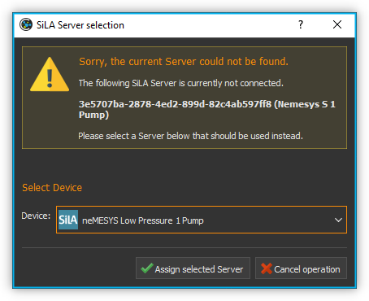
Here you can now select one of the connected SiLA servers to be used instead of the configured server.
Important. The new server must provide exactly the same features as the previous server. The selection dialog will inform you if this is not the case. |
If you have selected a compatible server, click on “Assign selected Server”. Now the previous server will be replaced by the selected server in all script functions. Afterwards, the configuration area is no longer grayed out and you can edit the function again. When you save the script, the server you just selected will be saved and used the next time you load the script.
Read SiLA properties via process data identifiers
Certain SiLA properties are automatically provided as process data. This makes it possible, for example, to initialize script variables directly via the respective process date or to use this data in the graphical process data logger.
For this purpose, the SiLA Properties must fulfill the following requirements:
the property must be observable.
the property must not require metadata.
the data type of the property must be a numeric (integer or real) or Boolean data type.
Use in other script functions
SiLA process data can be accessed in exactly the same way as other process data from other devices:
 The selected process data identifier is now entered in the
input field. These also have a specific form based on the usual process
data identifier:
The selected process data identifier is now entered in the
input field. These also have a specific form based on the usual process
data identifier:
$$ServerName_ServerUUID.FeatureIdentifier_PropertyIdentifier
Each identifier starts with two dollar signs and a dot separates the unique device name from the unique process data name. The device name is derived from the name of the SiLA server as well as its unique ID (UUID, Universally Unique Identifier) and the name for the process data is derived from the name of the feature and the respective property. The entire process data identifier must not contain any spaces or other special characters.
Use in graphical process data logger
SiLA process data can be used in the graphical process data logger as known from other devices:
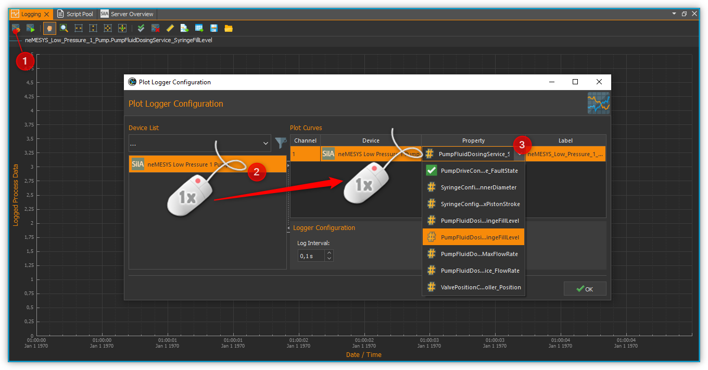
{kind=link}